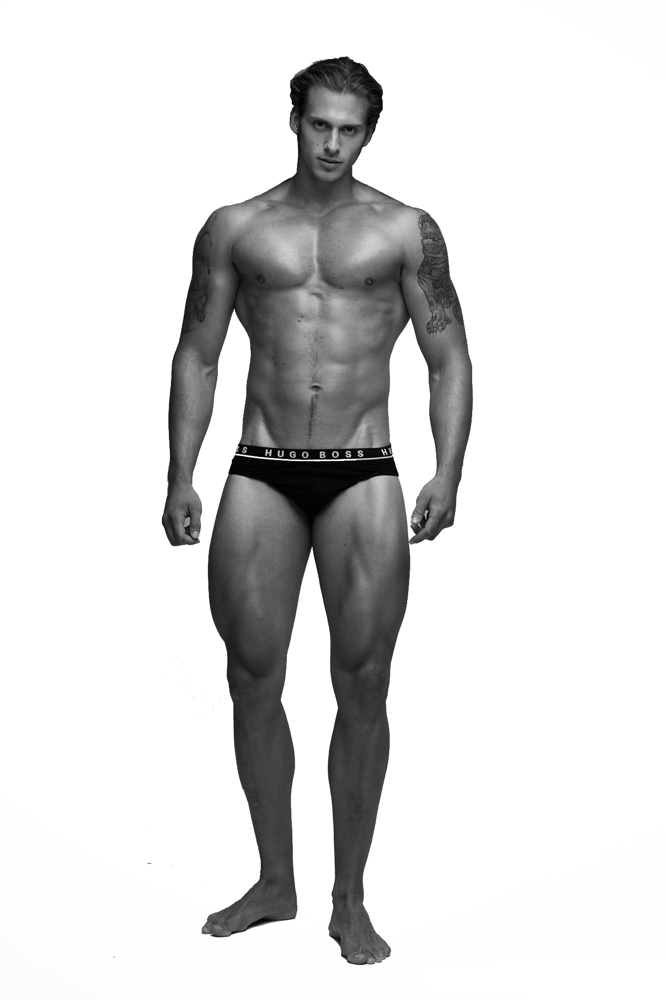

코르셋

여성의 몸매를 날씬하게 만들기 위해 고정하는 속옷이다.
페미니즘 용어로 사용될 때는 화장, 날씬한 몸매, 제모, 긴 머리 등
여성에게만 강요되는 외모 기준을 상징한다.
탈 코르셋
: 꾸미지 않을 자유
코르셋
여성의 몸매를 날씬하게 만들기 위해 고정하는 속옷이다.
페미니즘 용어로 사용될 때는 화장, 날씬한 몸매, 제모, 긴 머리 등
여성에게만 강요되는 외모 기준을 상징한다.
된장녀
김치녀
메갈년
과일 좀 깎아라
커피 좀 타와라
밥 좀 차려봐라
화장 좀 하고 다녀라
화장하는 법 좀 배워라
여자애가 피부 관리 좀 해야지
여자애 방이 그게 뭐냐
여자애가 조신하지 못하게
암탉이 울면 집안이 망한다고
어디 여자가 그런 일을 하려고 해
여자 직업에 이 정도면 돈 많이 받지
여자는 좋은 남자 만나는게 가장 좋은 인생이지
여자가 담배피면 애한테 안 좋지
너는 살만 빼면 좀 예쁠 것 같은데
쌍수 안하니?
여자애 옷차림이 그게 뭐니
어디 남자하는 일에 여자가 감히
여자의 적은 여자
여자치고 게임 잘하시네요
여자인데 탱커하시네요?
걔는 줘도 안먹는다
너 혹시 브라 안했니?
여대 가면 시집 잘간대
여자 나이는 계란 한판
넌 성형 안하니?
여자애가 많이 먹네
"아니다!
나는 내가 꾸미고 싶어서 꾸민다!"
예쁜가? 아름다운가? 남자 꾸밈은 이성어필용과 권력용이 차이가 없다. 선보러 나간 옷 그대로 입고 연단에서서 연설해도 먹히는 차림이다. 반면 여성은 이성 어필과 권력용 꾸밈이 큰 차이가 난다. 권력용 꾸밈이란 곧 정치인의 꾸밈인데, 그게 보통 여성 꾸밈과는 방향이 다르다. @blackink_git
코르셋은
대물림
대물림 된다.
대학생 고예리(20)씨는 교회에서 만난 여중생들이 자신의 화장에 대해 ‘품평회’를 하는 모습에 충격을 받고 탈코르셋 운동을 시작했다. 화장이 여성만의 전유물로 인식되며 어린 여중생들에게까지 대물림되고 있다는 생각이 들었기 때문이다.